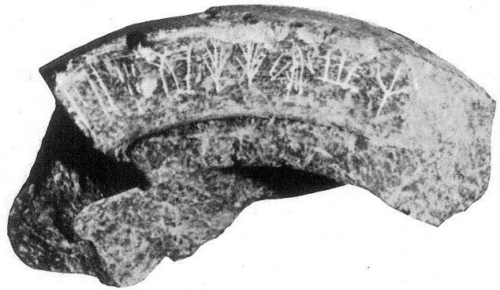
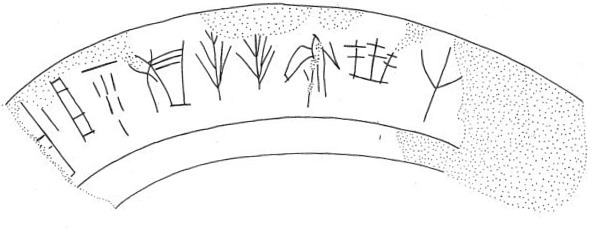

-
PKZa15
Names
Aliases for the inscription.
PKZa15, PK Za 15
Support
Type of Object.
Stone vessel
Location
Site where object was found.
Palaikastro
Findspot
Location at Site.
Unavailable


Scribe
Writer of Inscription.
Unavailable
Context
Approximate Date of Inscription.
Unavailable
Dimensions
Height x Length x Thickness.
Catalogue
Museum Reference Number.
Readings
1 1 0 JA none
1 1 0 DI none
1 1 0 KI none
1 1 0 TE none
1 1 0 TE none
1 1 0 DU none
1 1 0 PU₂ none
1 1 0 RE none
Linear A Transcription
A Linear A transcription with words parsed separately.
Line breaks match the inscription.
𐘱𐘆𐘸𐘃𐘃𐘬𐘜𐘙
ASCII Transcription
An ASCII transcription with words parsed separately.
Line breaks match the inscription.
JADIKITETEDUPU₂RE
Linear A Tabulation
A Linear A transcription with words parsed separately.
Line breaks are logical, e.g. to represent a list.
𐘱𐘆𐘸𐘃𐘃𐘬𐘜𐘙
ASCII Tabulation
An ASCII transcription with words parsed separately.
Line breaks are logical, e.g. to represent a list.
JADIKITETEDUPU₂RE
PK Za 15
(Ayios Nikolaos Mus. 2469) (GORILA IV: 41),
circular Libation Table, serpentine (Petsophas)
]-•
JA-DI-KI-TE-TE-
DU
-PU
2
-RE[
-
perhaps ]-JA
perhaps ]-JA
Commentary © John Younger
References
papers/GORILA-Vol4.pdf#page=83